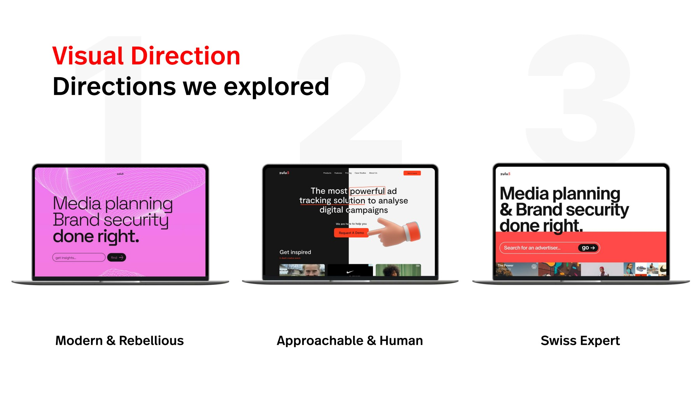
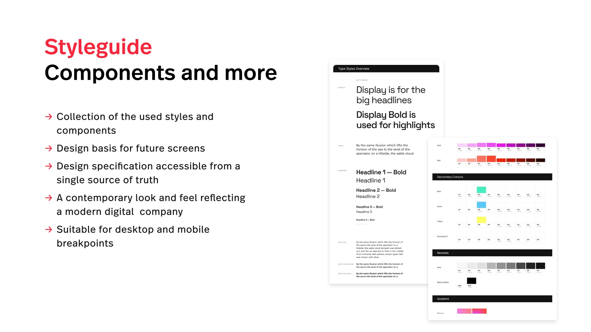

Digital identity · Advertising technology
Zulu5 · Digital brand refresh
A landing page and visual language refresh that made Zulu5’s advertising intelligence and brand safety tools easier to understand.

At Edenspiekermann, the project set out to make Zulu5’s products clear at first sight. The Analysis & Foundation board reviewed the previous site and flagged its clear value proposition. The team worked through audience personas, value propositions and competitor analysis before exploring three visual directions. The refresh paired an updated palette and visual language with more direct copy and clearer product messaging.
The January 2023 wrap-up documents responsive landing page designs, a style guide with reusable components and an email template. The visual system gave the team a basis for extending the design to other pages.



